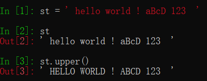
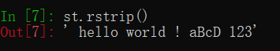

原文连接:https://www.cnblogs.com/jiyu-hlzy/p/11740961.html
- 列表的常用方法 append、insert、extend、pop、remove
- 元组的两个方法count、index
- 字符串的常用方法及转义count、find、index、replace、split、\n、\t、\'、\\、r' '
- encode decode 编码规则
- dir()带参数时，返回参数的属性、方法列表
列表方法
增
追加：append(值)
插入：insert(索引，值)
追加：extend（序列类型） #字符串会一个一个取出来追加在后面
删
pop（索引）#默认删除最后一个，不可填切片

remove（值）#若有重复值，先删除第一个
del 列表名[索引] #索引可以填写切片，删除多个

clear（）#清空列表
改
列表名[索引]=值
查
index(值，索引起点）#返回值第一次出现的索引，从索引起点开始查询（默认为0），若不存在则报错
count（值）#返回值出现的次数

其它方法
列表1=列表2.copy（）
sort（）#正序排列

reverse（）#反向排列（不是反序）
元组方法
元组是不可变对象，只有两个方法，方便查找元组中的数据
index(值，索引起点）#返回值第一次出现的索引，从索引起点开始查询（默认为0），若不存在则报错
count（值）#返回值出现的次数
字符串方法
虽然字符串是不可变对象，但是可以通过返回新对象的方法来实现增删改查
增
符号 '+' #字符串的拼接

删
replace（'被替换的值','替换的值',替换的次数）#删除的时候，引号内替换的值就不填
改
upper（）#小写变大写

lower（）#大写变小写
strip（）#去除前后空格
lstrip（）#只去除左边的空格
rstrip（）#只去除右边的空格

capitalize（）#首字母大写
title（)#每个单词首字母大写
split（值）#以指定的值来切割字符串，返回列表
查
count（值）#返回值出现次数
index(值，索引起点）#返回值第一次出现的索引，从索引起点开始查询（默认为0），若不存在则报错
find(值，索引起点）#返回值的索引，从索引起点开始查询（默认为0），若不存在则返回-1
isdigit（）#判断是不是纯数字，字符串内全为数字，返回True，否则为False
isalpha（）#判断是不是纯字符，返回bool
endswith（值）#判断字符串是不是以这个值结尾
startswith（值）#判断字符串是不是以这个值开头
islower（）#判断纯小写
isupper（）#判断纯大写
字符串转义及编码
字符前面加上 \ ，字符就不再表示字符本身的意思，表示ASCII码中不能显示字符，常见有下
\n 换行
\t 水平制表符
\b 退格 #相当于按了一下删除键
\r 回车，当前位置到末尾的内容移到本行开头（替换前面的内容）
\\ 代表\
\' 代表单引号' ，同样的"等符号也可以这么输出
\0 代表一个空字符
\a 系统提示音
在python中如果要去掉字符串的转义，只需要在字符串前面加上 r ,如：r'\abcdefg'

字符串编码
编码(encode)，默认以‘utf-8’
解码(decode)